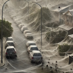

A NVIDIA está prestes a lançar a série RTX 50, prometendo saltos de performance com a nova arquitetura "Blackwell". Com design inovador e tecnologias avançadas, a série 50 busca transformar o mercado de GPUs e oferecer poder gráfico de ponta para gamers e criadores de conteúdo.
Notícias Principais
NVIDIA RTX 50 Series: A nova geração de GPUs chega para revolucionar o
desempenho gráfico!

Invasão de aranhas na austrália: milhares de aranhas criam cenário
assustador em várias cidades
Uma manifestação massiva de aranhas surpreendeu os moradores de diversas cidades na Austrália, cobrindo árvores, edifícios e até veículos com densas camadas de teias. Especialistas afirmam que o fenômeno, embora incomum, ocorre ocasionalmente devido a condições climáticas específicas, que levam as aranhas a migrar em grandes quantidades e tecer enormes redes para se locomoverem. As teias, que parecem véus brancos ao amanhecer, criaram um cenário inusitado e levemente assustador, chamando a atenção de pesquisadores e turistas. As autoridades locais pedem que a população tome precauções ao transitar em áreas afetadas, enquanto aguardam o fim do fenômeno natural.
Categorias
Mundo
Notícias internacionais e atualizações globais.
Tecnologia
Inovações e tendências no setor de tecnologia.
Esportes
Destaques e resultados esportivos.
Economia
Análises e notícias econômicas.

As 10 raças de cachorro mais dóceis
❮
❯